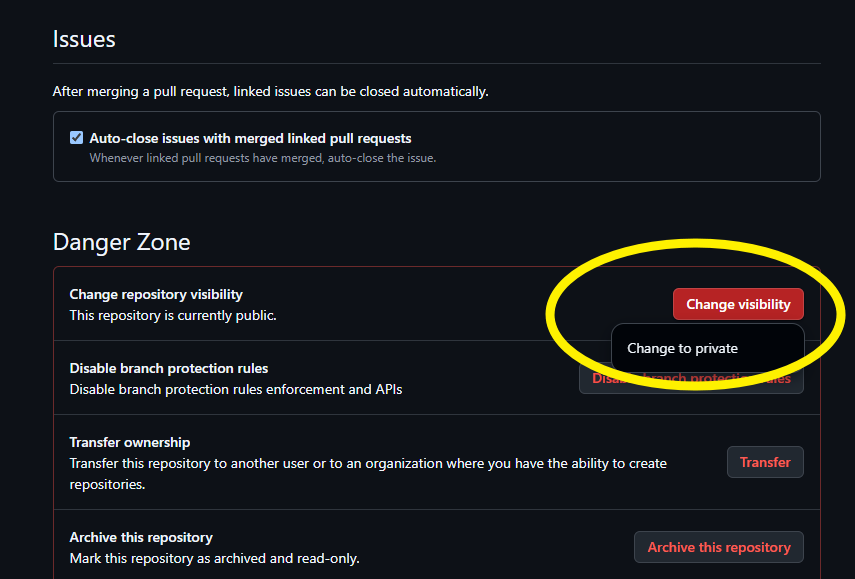

저장소 가시성 변경
1. 새 저장소 생성 시 설정하기
- GitHub에 로그인 후 오른쪽 상단의 '+' 아이콘을 클릭하고 'New repository' 선택
- 저장소 이름과 설명 입력
- 'Visibility' 섹션에서 'Public' 또는 'Private' 선택
- Public: 모든 사람이 볼 수 있고 복제할 수 있음
- Private: 초대된 사람만 접근 가능
- 'Create repository' 버튼 클릭
2. 기존 저장소의 가시성 변경하기
- 저장소의 'Settings' 탭에서 'Danger Zone' 섹션으로 이동
- 'Change visibility' 버튼 클릭
- 새로운 가시성 선택:
- Public: 모든 사람이 볼 수 있음
- Private: 초대된 사람만 볼 수 있음
- 저장소 이름을 입력하여 확인
3. 저장소 가시성 변경 시 주의사항
- Private에서 Public으로 변경: 모든 사람이 코드를 볼 수 있게 됩니다. 민감한 정보가 포함되어 있지 않은지 확인하세요.
- Public에서 Private으로 변경: 기존에 공개되었던 코드는 더 이상 공개되지 않지만, 이전에 복제된 저장소는 여전히 존재합니다.
- 조직(Organization) 저장소: 조직 소유의 저장소는 조직 관리자만 가시성을 변경할 수 있습니다.
4. 비공개 저장소의 장점
- 코드를 비공개로 유지하면서도 Git의 버전 관리 기능 활용 가능
- 협업자만 초대하여 함께 작업 가능
- 무료 계정에서도 무제한 비공개 저장소 생성 가능
- 필요할 때 언제든지 공개로 전환 가능
⚠️ Note: Private에서 Public으로 변경 시 모든 사람이 코드를 볼 수 있게 됩니다.